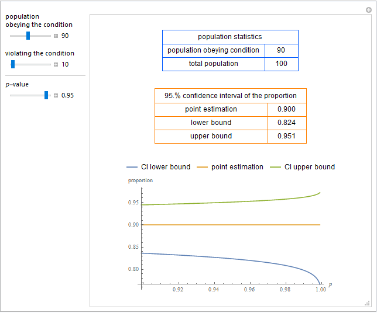

HCSL PublicationsStatistical Tools1. Chatzimichail T, Hatjimihail AT. Exact Confidence Intervals for a Single Proportion. Wolfram Demonstrations Project, 2018.AbstractThis Demonstration shows calculations of point estimations and confidence intervals for various single proportions of populations obeying a condition (or trait), as well as their plots versus p-value. This is done for differing populations obeying and violating a condition (or trait) and differing p-values for the estimation of the lower and upper bounds of the confidence intervals. CommentFor calculating the confidence interval of each single proportion the exact method using the F distribution is applied.  Snapshot Source code (Revised on 03/08/2018) 2. Chatzimichail T, Hatjimihail AT. Inferences about the Difference between Two Proportions. Wolfram Demonstrations Project, 2018.AbstractThis Demonstration explores statistical inferences regarding the difference between two proportions of populations obeying a condition (or trait). It calculates the statistical significance and the confidence intervals for the difference and plots the confidence intervals versus p-value. This is done for differing populations obeying a condition or without the condition and for differing p-values for the estimation of the confidence intervals.
Snapshot |